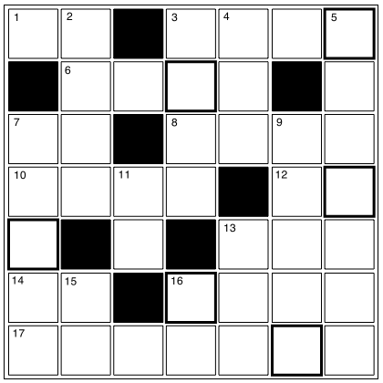

クロスワード
【→ PDF（印刷用）】

- タテのカギ
-
- ２. とりかえること。
- ３. 完全にそのような状態になる様子。［副詞］
- ４. 時間を示す道具。
- ５. 駅で乗客が乗り降りするためにつくられた部分のこと。
- ７. 『考え』は外来語で何という？
- ９. 『高速道路』は外来語で何という？
- 11. 機械や道具などに広く使われる金属。
- 13. 『卸売』の反対は？
- 15. 社会や組織の中での立場や立場の上下のこと。
- 16. 悪いこと。道徳的に良くないこと。
- ヨコのカギ
-
- １. 容器などの一番下の部分のこと。
- ３. 『停止』は外来語で何という？
- ６. 会場で客や参加者の用件などを聞く場所のこと。
- ７. 色のひとつ。○○信号。○○ワイン。
- ８. 『開発』は何と読む？
- 10. 学問や教養のある人のこと。
- 12. 布を縫うときに使うのは、針と○○。
- 13. 選択の対象となる人や物のこと。
- 14. １。
- 16. サッカーで、相手チームのホームで試合をすること。
- 17. 夏によく食べる冷たいお菓子。
【→ 解答を見る】